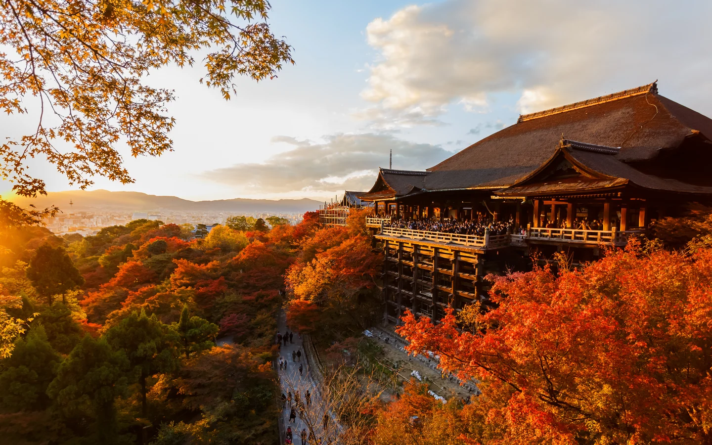
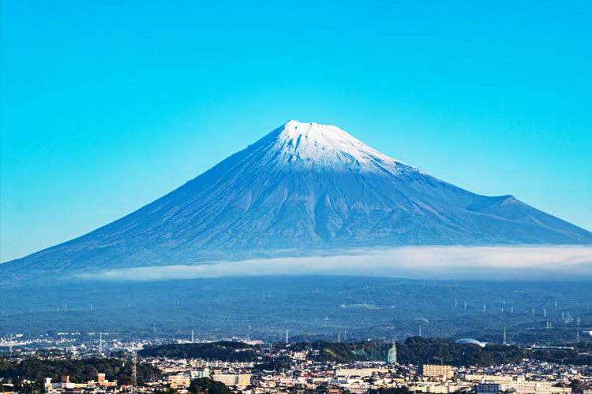
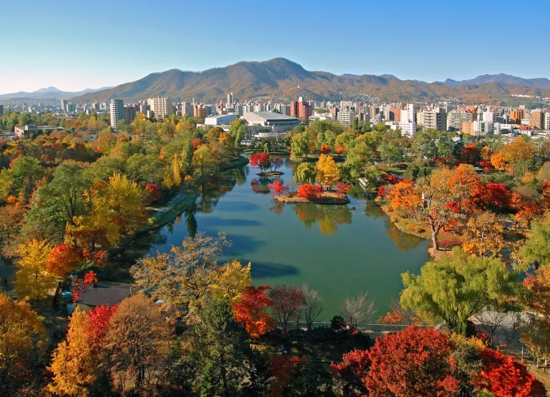
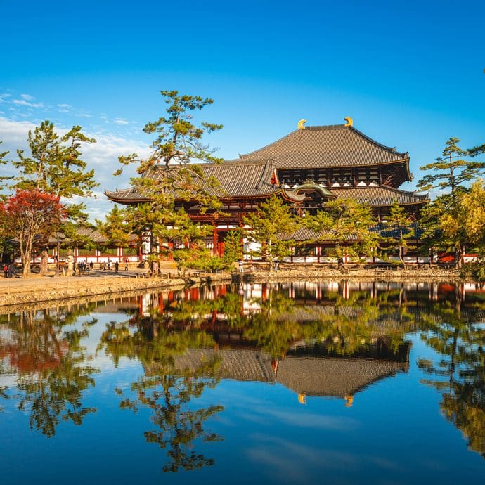
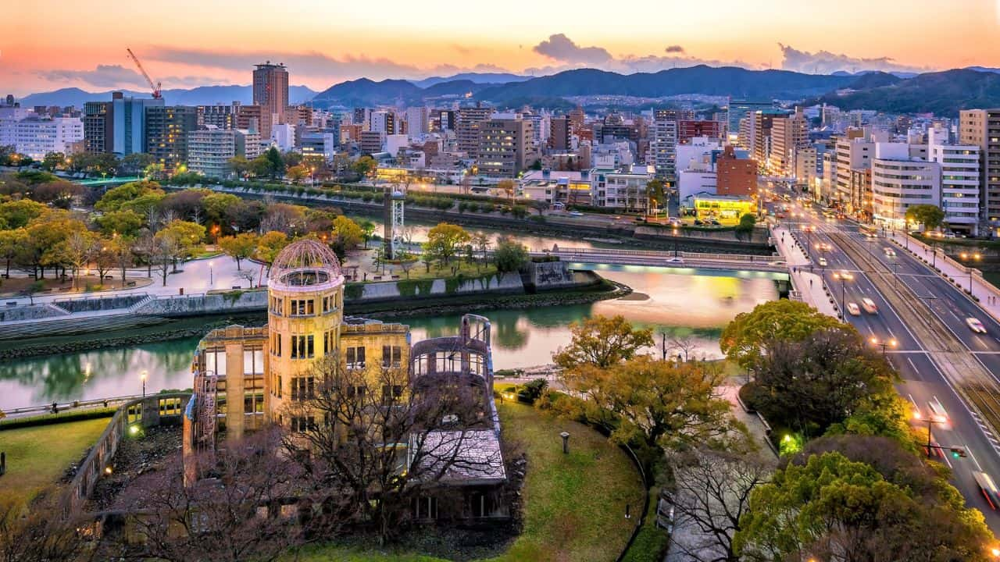
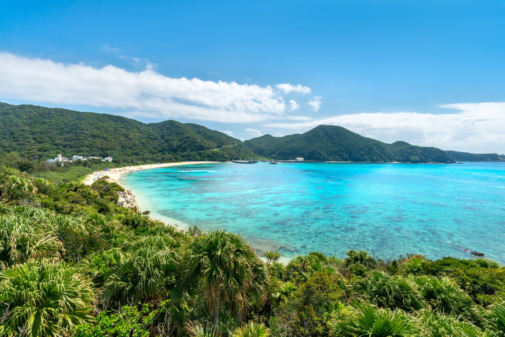
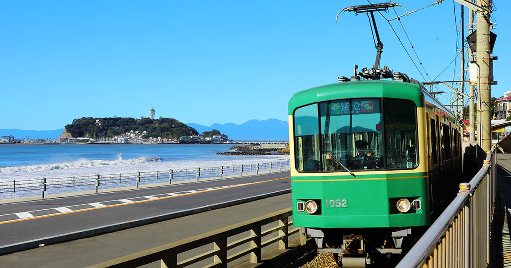
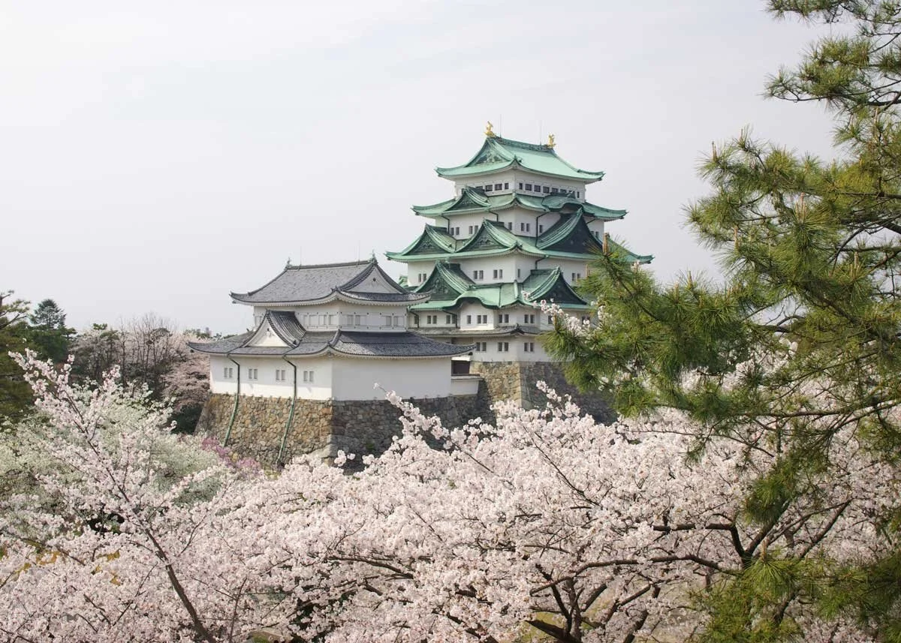

20 Destinasi Populer
Klik salah satu destinasi untuk melihat informasi lengkap.

Tokyo
Kota metropolitan futuristik dengan budaya modern.

Kyoto
Kota bersejarah dengan kuil dan taman tradisional.

Osaka
Kota kuliner dan hiburan dengan suasana hidup.

Gunung Fuji
Ikon Jepang dan destinasi alam populer.

Hokkaido
Pulau bersalju dengan festival musim dingin.

Nara
Kota tenang dengan rusa jinak dan kuil Buddha.

Hiroshima
Simbol perdamaian dunia dan kota bersejarah.

Okinawa
Pulau tropis dengan budaya Ryukyu.

Kamakura
Kota pesisir dengan patung Buddha raksasa.

Fukuoka
Kota modern dengan kuliner khas Hakata.

Nagoya
Pusat industri dan budaya Jepang.

Nikko
Kota pegunungan dengan kuil megah.